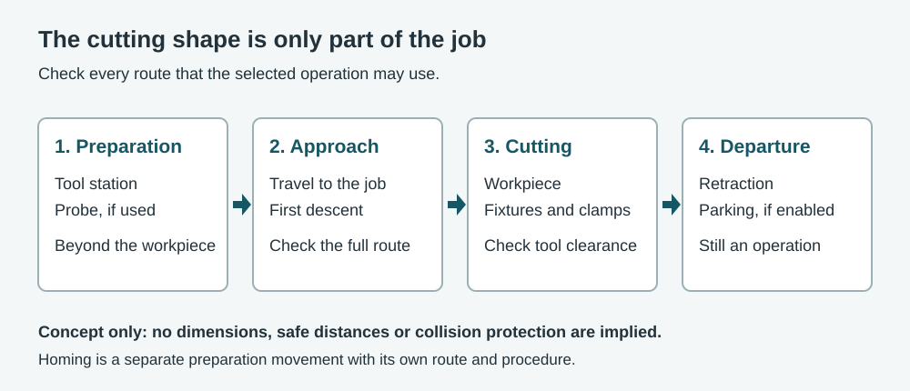

RADONIX · ROUTERXYZ+TC · CHAPTER 2
Operator Manual · English · 8 October 2026
Safe Operation and Pre-start Checks
Learn what to check before asking the machine to move, what the different stopping controls mean, and when to stop and ask for help.
Expanded draft for review. Read alongside practical training and the instructions for your installed machine. Machine photographs and an application screenshot are reserved for insertion.
2.1 What “ready to start” really means
A machine can be switched on, connected to the computer and showing no alarm, yet still be unprepared for the next operation. The wrong workpiece may be on the table. A clamp may be in the intended route. The selected tool may belong to another job. Readiness therefore means more than finding a green light: the machine, the physical setup and the job information must agree.
This chapter helps you make that comparison. It does not expect you to understand how the software is written. Instead, it asks practical questions: What will move? Where will it go? What has changed since the last operation? What should I see before I continue? You will use these questions during machine preparation, tool changes, the first start of a job and recovery after an interruption.
There are two different moments to consider. Before the first movement, you must establish that the machine can carry out the intended preparation step, such as homing, with the required safeguards in place. Before machining, you must also establish that the workpiece, tool, work zero and machining file are correct. A machine that has not yet been homed cannot satisfy every machining check; that is a reason to complete the proper preparation procedure, not to skip its checks.
Read the stopping explanations before using the motion controls. You should know what you will do if an ordinary operation needs to be interrupted and where the physical emergency-stop controls are located if an immediate danger develops. Learning that distinction while the machine is moving creates unnecessary uncertainty.
The software can be installed on machines with different guarding, workholding and auxiliary equipment. This chapter explains the reviewed application behavior, but the machine manufacturer's instructions and your site's approved operating procedures supply the physical checks, permitted access methods and training requirements for your installation. If those instructions are missing or conflict with what you observe, obtain clarification before operating.
By the end of this chapter, you should be able to explain why an accepted command is not a complete safety check, distinguish a motion stop from a safe condition for physical access, and identify the information that must be checked again after something changes.
2.2 Know the machine and prepare the work area
Before your first independent shift, have the person responsible for the machine show you the normal operating position, the permitted loading area and every relevant physical emergency-stop control. Learn how to summon assistance and who may authorize a restart after a fault. These arrangements cannot be learned from the computer screen alone. Practical instruction and supervision should match the work you will actually perform, including setup and cleaning; see HSE guidance on training and supervision.
Think about the whole machine, not just the point where the cutter touches the workpiece. The cutter rotates, the head and gantry travel, and an automatic tool changer can operate away from the cutting area. Router hazards also include trapping, ejected material, noise and dust. Use the installed safeguards and the protection specified for your machine and process. The general hazard categories are described in HSE's router and machining-centre guidance; that document does not identify the safeguards fitted to your particular installation.
At the start of a shift, look for changes from the expected condition. A maintenance notice, an unfamiliar tool in the spindle, a moved fixture or a colleague still working at the machine means that the previous operating state cannot simply be assumed. Establish who has control of the machine before you touch its commands. An open application is not evidence that the previous operator has handed the machine over.
| Area | What you need to know | If the answer is unclear |
|---|---|---|
| Operator position | Where you are expected to stand and how to observe the operation without entering a restricted area. | Have the approved position and access boundaries demonstrated. |
| Physical controls | Which controls are for ordinary stopping and which are emergency-stop devices. | Ask for identification before starting; do not discover their purpose during a job. |
| Safeguards | Which guards, doors or other protective devices must be in place for this operation. | Report a missing, damaged or uncertain safeguard. Do not bypass it to obtain a ready indication. |
| People and work area | Whether anyone is loading, inspecting, cleaning or servicing the machine. | Resolve the handover and obtain the required clearance before commanding movement. |
| Process equipment | Which extraction, workholding and auxiliary services the approved job requires. | Use the machine's preparation instructions; do not invent pressure, speed or other setup values. |
Keep the operator's controls available and the approach to them unobstructed. A keyboard partly covered by paperwork or a mouse resting where it can be knocked makes it harder to issue the intended command. Before using a shortcut, check which window is active and what that shortcut means in the current setup. Do not rest objects on controls.
FIGURE 2-1 · MACHINE PHOTOGRAPH REQUIRED
The operator position and physical safety controls
Insert an overview photograph of the actual installation, taken from a permitted location. Mark the normal operator position, identified emergency-stop devices, loading access, guarding and tool-changing area. Have the machine owner confirm every label. Use additional views if one photograph cannot show the relevant controls.
Suggested image: assets/images/02-machine-safety-controls.jpg. Do not use a generic router photograph or infer safety boundaries from this placeholder.
2.3 Match the workpiece, job and work zero
Begin with the job you are supposed to make, not with whichever file happens to be open. Identify the work order or drawing, the approved machining file and its revision, the material and the required starting dimensions. If two files have similar names, do not choose by appearance or by assuming that the most recently opened file is the correct one. Use the identification supplied with the job.
The workpiece is the material being machined. Workholding means the arrangement that keeps it in its intended position, such as the approved clamps or vacuum arrangement on your machine. The screen does not establish that the material is held correctly. Complete the physical loading and holding checks through the approved machine procedure, including its requirements for access and safe handling.
Next, compare the physical arrangement with the expected job layout. Check which face is uppermost and which edge or feature establishes the orientation. A rectangular sheet rotated through a quarter turn can still look plausible while placing a feature in the wrong place. Similarly, material of the correct length and width may have the wrong thickness. The drawing or setup sheet should tell you what is intended.
| Item | Compare it with | Why the comparison matters |
|---|---|---|
| Machining file | The approved job and revision. | A successfully opened file may still belong to a different part. |
| Material and dimensions | The job's specified starting stock. | A different thickness changes the relationship between the tool, top surface and table. |
| Workpiece orientation | The setup drawing and intended work zero. | The same shape can be loaded in more than one orientation. |
| Workholding | The approved holding arrangement and inspection requirements. | The programmed route must suit the actual supports, clamps and material. |
| Work zero | The physical reference required by this job. | The program needs a known relationship to the material, not merely a convenient display value. |
Work zero is the reference from which the job's coordinates are interpreted. It may be associated with a corner, a centre or another specified feature. Do not assume that every job uses the same corner or the same height reference. A displayed zero only has meaning when you know what physical location it represents. The detailed procedure for establishing it belongs to the work-origin chapter.
Opening a file and seeing a recognizable shape are useful checks, but they do not complete setup approval. Read any preparation or travel warnings and resolve them before starting. Limits concern the machine's permitted travel; they do not describe every clamp, loose object or part of the workpiece. If the file, drawing and physical setup disagree, stop preparation and ask the person responsible for the job to resolve the difference.
2.4 Check tools and understand actions that can start motion
The tool number connects a job's tool request with the machine's configured tool information. It does not describe the cutter by itself. Two cutters can fit the same holder but have different diameters, lengths or purposes. Before a job, compare the required tool identification with the approved setup information and the actual installed tooling through the machine's permitted inspection procedure.
A holder is the part that carries the cutter in the spindle or tool station. A tool station is a location used by the automatic tool changer. The station number, its contents and the application's tool information must agree. If someone exchanged the contents of two stations without making the required authorized updates, an apparently correct tool number would not resolve that discrepancy.
Check tooling condition and suitability using the instructions for the installed tooling and process. The application cannot inspect cutting edges or prove that a holder has been assembled correctly. Stop preparation if damage, an uncertain identity or a mismatch is found. Do not substitute a cutter simply because it fits physically. Tool suitability and condition are also discussed in HSE's tooling guidance.
The tool selector is an operating control
In this application, accepting a selection in the tool selector can request a real tool exchange. Selecting an entry from the list or committing the choice with Enter is not merely changing a label for later use. When the request is permitted, the machine may begin the exchange sequence. Treat that action with the same preparation and attention as a motion command.
The blank selection represents tool zero, meaning an empty spindle; accepting it can request unloading of the current tool. Do not choose it just to clear an unfamiliar number. During an exchange, the display follows the confirmed tool state as the operation progresses. A requested tool is not necessarily already in the spindle.
| Action | What it can mean physically | Check before accepting |
|---|---|---|
| Accept a tool selection | Begin a manual tool-exchange request. | The intended tool, station contents, exchange area and required machine conditions. |
| Accept the blank tool selection | Request an empty spindle by unloading the current tool. | That unloading is actually intended and permitted. |
| Request tool-length measurement | Move the machine through a measurement sequence. | The correct measurement procedure, tool state, probe area and required preparation. |
| Run a machining job | Prepare a required tool and position the head before cutting begins. | Both the preparation route and the cutting setup. |
Tool length tells the system how the tool tip relates to the machine's controlled position. A measurement belongs to the tool and assembly for which it was established. Replacing or moving a cutter in its holder can invalidate that relationship. Do not copy another tool's length or change a value until the display looks convenient. Follow the tool-measurement procedure, and ask for assistance if the physical tooling and the displayed state cannot be reconciled.
2.5 Check the whole movement, not just the cutting shape
When you look at a preview, your attention naturally goes to the shape being machined. The machine also has to reach that shape, change tools when required and leave the work area afterward. These movements can take place outside the outline of the finished part. Before a command, consider its complete route and destination.
Clearance means enough separation for the actual moving parts to pass without contact. It concerns more than the cutter tip. The holder, spindle body, head and any fitted attachments occupy space too. A small cutter passing beside a clamp does not prove that the larger parts above it will also pass. The preview is not a complete model of every object on the installed machine.

A raised travel route still needs checking
For positioning actions such as Go Home, Go Reference and parking, the reviewed application uses a raised Z position before horizontal travel when horizontal movement is required. It then travels horizontally and goes to the final height. If only the height needs changing, there is no horizontal travel stage. This describes the application's chosen sequence; it does not establish that every object is clear.
The raised position comes from the machine configuration. The software checks travel values, but it does not look around the physical machine for a tall clamp, a loose object or an altered attachment. Do not assume that a command is collision-free because its name sounds like a return to a known position. If the configured route does not suit the setup, have the cause resolved by the responsible person rather than editing limits to force acceptance.
| Operation | Area to consider | Common mistaken assumption |
|---|---|---|
| Homing | The reference-search travel of the machine axes. | “It will stay close to the current workpiece.” |
| Tool exchange | The approach to, movement through and withdrawal from the tool station. | “Only the tool inside the spindle will change.” |
| Tool measurement | The route to the measuring location and the measurement movement. | “This button only updates a number.” |
| Go Home, Go Reference or parking | The lift, horizontal route and final descent that apply to the destination. | “A familiar destination guarantees a clear route.” |
| Program start or restart | Any tool preparation and movement to the entry point, followed by cutting. | “The next movement must be the first visible cutting line.” |
If you cannot predict the basic purpose and destination of the next movement, read the relevant operating chapter or ask for a demonstration before issuing it. This is particularly important for a new setup and after a tool, fixture or work origin has changed.
2.6 Read the screen without assuming more than it tells you
The screen helps you establish the machine's reported condition. Each indication answers a particular question. A connection indication concerns communication; a homing indication concerns the established machine reference. Neither answers whether today's workpiece is secured or whether a clamp obstructs the next move.
Check the operating mode first
Simulation is used for simulated operation; Normal is the mode intended for real machine operation. Identify the selected mode before interpreting movement on the display. Do not issue a test movement to find out whether the application is controlling the real machine. If the mode is uncertain, resolve it before using motion controls.
A mode caption also does not prove a working connection. The application distinguishes the selected operating mode from the condition of its connection. Treat them as two checks: “Am I in the intended mode?” and “Does the application report the required connection state?” After startup or reconnection, wait for a clear, settled state rather than clicking commands while the application is changing state.
| Indication | Meaning in the reviewed application | Still needs checking separately |
|---|---|---|
| Connection | The controller is connected, the machine communication is operational and a connection change is not in progress. | The physical setup, selected mode, homing and job preparation. |
| Axis ready indication | The reported axis is ready to move without an axis or paired-axis fault. | Whether homing is complete and the intended route is suitable. |
| Homed | All configured axes report homed while the machine connection is operational. This includes the additional gantry drive. | Workpiece zero, tool information and setup correctness. |
| Alarm | An axis fault or a fault involving paired-axis movement is reported. | The cause and required recovery. Absence of this lamp does not rule out every other warning. |
| Emergency indication | The application's reported emergency-input condition. | Actual standstill and the machine's physical access requirements. |
Homing establishes the machine's reference; it does not locate a new workpiece for you. A ready axis may still need homing. Conversely, completing homing does not establish the correct work zero or prove that the tool length belongs to the fitted tool. These distinctions explain why several checks are necessary even when the screen appears generally ready.
A disabled button or a rejected request can be useful information. Read the explanation before trying again. The machine may still be completing another operation, a required condition may be absent, or your current access may not permit the action. Repeated clicking does not supply the missing condition. Do not change settings, input assignments or access credentials simply to make a control available.
FIGURE 2-3 · APPLICATION SCREENSHOT REQUIRED
Mode, connection and readiness indications
Insert an English-language screenshot of the actual main window. Label the mode caption, connection indication, axis indications, homed indication and alarm/emergency indications. State the real or simulated capture condition in the final caption. Use a separate image for another state rather than recolouring a lamp.
Suggested image: assets/images/02-readiness-indicators.png. Capture from an approved stationary condition; do not create a machine fault merely to obtain an illustration.
2.7 Understand Pause, Reset and feed override
Several controls can make the machine appear to stop or wait, but they do different jobs. Learn their meaning before running a program. Choosing the wrong one can change where a later start begins, or leave a movement ready to continue when you thought it had been cancelled.
The explanations below concern ordinary application controls. They do not replace the physical emergency-stop procedure. If there is immediate danger, respond through that procedure; do not delay while deciding which control best preserves the job.
| Control | Effect on motion and the job | What you must not assume |
|---|---|---|
| Pause | Requests a stop of all motion while retaining the main machining program's place for possible continuation. Cancels pending positioning continuation and tool-changing activity. | That the spindle has stopped, or that an interrupted tool exchange can simply carry on. |
| Reset | Requests a stop of all motion. After the main machining program is idle, the application resets its place to the beginning. | That a later Run will continue where cutting stopped, or that physical access is permitted. |
| Feed override at 0% | Holds the main program's feed through controlled deceleration. Its existing operation remains available to continue when the override is raised. | That all machine actions have been cancelled or another Run is required before feed can resume. |
| Physical emergency stop | Acts through the installed machine's emergency-stop system. | That its physical behavior or the conditions for access can be determined from this software manual alone. |
Pause keeps the program's place, not a promise to resume safely
Imagine a bookmark in a book. Pause keeps the main machining program's bookmark, so the application can retain where it was interrupted. The physical setup must still be suitable before you continue. If a tool has been replaced or the workpiece has shifted, retaining the bookmark does not make the old cutting conditions valid.
Pause also interrupts auxiliary motion. In particular, a partly completed tool exchange is not the same as a simple pause during an ordinary cutting move. Establish the resulting tool state and use the appropriate recovery procedure. Do not assume that every interrupted operation is preserved just because the main machining program retains its place.
Reset changes the next-start situation
Reset requests stopping first; the program reset follows when the main program is idle. Allow that sequence to complete and check the resulting state. Pressing Run afterward must be treated as a new start situation, with the starting location and setup checked again. The Pause controls in the run, jog and motion areas also stop all motion, but preserve the main program cursor.
Reset changes the program's selected place; it does not move the physical head to match it. Reset is available while connected, including during motion: it first requests a controlled stop and then rewinds the idle main path. It does not repair faults or establish permission for physical access.
Zero feed is especially easy to misunderstand
Feed override adjusts the rate of the main machining movement. At zero, feed can come to a controlled hold while the operation remains active. Raising it again can allow movement to resume without pressing Run again. Tell anyone taking over the controls if the machine is waiting this way. Never use zero feed as permission to reach into the machine.
Stopping travel does not prove that the cutter has stopped rotating. Pause and Reset are motion-stop requests; the spindle has its own control and stopping behavior. Observe the required machine procedure for spindle stopping and access. A changed button appearance, a zero feed value or a still position display is not a substitute for establishing the required physical condition.
2.8 Respond to immediate danger and understand the emergency indication
If an immediate danger develops, use the installed physical emergency-stop control from a safe position according to your machine training. Keep clear and follow the site's emergency response arrangements. Do not delay to save a program position, dismiss a message or find the correct software window. This chapter does not prescribe the layout or stopping performance of the physical emergency circuit.
Learn the difference between the physical emergency-stop device and the application's emergency indication. The device is part of the machine's installed emergency-stop system. The indication is information displayed by the application. A lamp on the screen is not a device that you should rely on to make the machine stop.
What the application reports
In the reviewed configuration, the emergency input is normally closed: its normal, closed condition makes the red emergency indication turn off. An open condition makes it turn on. This describes the expected signal arrangement. The indication alone does not explain why the input is open, identify which physical device is involved, or prove that the machine has reached standstill.
The supplied machine-control behavior responds to an open emergency input by requesting a hold on motion and stopping spindle commands. This software response complements the physical emergency-stop circuit. It is not a replacement for that circuit, and its presence must not be interpreted as a safety certification for the installed machine.
| Observation | Reasonable conclusion | Conclusion you cannot make from this alone |
|---|---|---|
| Red emergency indication is on | The application reports the emergency input as open under the reviewed arrangement. | The cause is known, every moving part has stopped, or access is permitted. |
| Red emergency indication goes off | The input has returned to its normal closed condition. | The original hazard has been removed or the job is ready to restart. |
| Indication appears normal after reconnection | The current reported input is normal. | The previous interrupted setup, tool state and program position are still valid. |
Releasing an emergency stop is not restarting the job
Do not release an emergency-stop device merely to make a warning disappear. First follow the machine's procedure for identifying the cause, controlling the situation and obtaining any required authorization. The person who clears the condition must know whether other people are still investigating or working at the machine.
In the reviewed application behavior, return of the emergency input to normal does not automatically resume interrupted motion. A hold can remain while stopping completes. A later start requires an appropriate new command and valid conditions. Do not interpret a short wait as a reason to issue repeated commands.
Record what was happening immediately before the event when it is safe to do so. Whether the machine was cutting, measuring or exchanging tools matters to recovery. The next action should address that actual situation, not simply restore the screen to the way it looked before.
2.9 Distinguish a stopped machine from permission to enter
From the operator position, “nothing is moving” can describe several different conditions. The machine may be paused, waiting at zero feed, waiting for an auxiliary operation, or stopped after a command. These conditions have different restart behavior. None of those descriptions, by itself, tells you that reaching into the machine is permitted.
Energy isolation is a separate machine-specific process for controlling hazardous energy before work that requires it. A software Stop button, selector or guard interlock is not an energy-isolating device. Follow the authorized procedure for the actual task and machine; this distinction is explained in OSHA guidance on control circuits and isolation. This reference explains a principle, not which country's rules apply to your site.
Electrical power is not the only possible source of movement or injury. Compressed air, stored mechanical energy and gravity can also matter. Do not improvise by disconnecting a supply: removing it can change how an assembly is held. Have trained, authorized personnel carry out the required isolation and control of stored energy. See OSHA's hazardous-energy overview for the general background.
Why the distinction matters at the screen
The application can show zero motion while a spindle command remains active. A main program held by zero feed can move again when the feed setting changes. An interrupted tool exchange can leave the machine at an intermediate stage. The same still picture therefore does not mean the same physical condition in every case.
Normal loading, inspection, cleaning and servicing may have different approved procedures. Learn which one applies to your task. If an unexpected blockage or tool problem falls outside the procedure you were trained to perform, stop and request assistance. Do not turn a production interruption into an improvised maintenance operation.
Likewise, closing the application or disconnecting communication is not a substitute for establishing a safe physical condition. A computer window concerns the operator interface. It does not verify every source of machine energy, the spindle's actual standstill or another person's control of the equipment.
Before leaving the controls or handing them over, make the current condition clear to the next responsible person. State whether the job is paused, stopped, awaiting recovery or unavailable for use. In particular, identify any unresolved issue and any physical work in progress. An unexplained stationary machine invites a mistaken restart.
2.10 Make the first movement a deliberate operation
The first movement of a shift may be homing, a manual adjustment or another approved preparation action. It should have a clear purpose. “I want to see whether it moves” is not a sufficient plan on an unfamiliar real machine. Before using a control, be able to describe what you expect to move and how you will recognize completion.
For the first movement, complete the physical pre-start checks and confirm the intended mode, connection and relevant readiness conditions. You do not have to pretend that the machine is already homed before asking it to home. You do have to use the homing procedure and establish that its search route is available. Commands that require completed homing must wait until that condition has actually been established.
- Name the intended action.
Decide whether you are homing, jogging, positioning, changing a tool or measuring. Similar-looking controls can have different purposes.
- Check what the action will use.
Consider the axes, route, destination and any auxiliary equipment involved. Confirm that the relevant preparation and safeguarding requirements have been met.
- Read the values before confirming.
For a manual move, check the selected mode, direction, distance or destination and speed as applicable. Distinguish a destination coordinate from a distance to travel.
- Issue the intended command once and observe.
Look for both the application's response and the expected physical behavior from the permitted operating position. Do not repeatedly click because movement has not started immediately.
- Confirm completion before the next action.
Check the reported result and actual condition. A rejected or interrupted action needs an explanation before you proceed.
Releasing a button does not stop every kind of move
With continuous jog, the held direction control requests continuing movement, and releasing it requests stopping that jog. A step move is different: it requests a finite distance. A position move requests travel to a destination. Those finite moves can continue after the button or key is released.
For example, clicking a position command is more like telling the machine “go to this location” than holding a control that means “move only while I press.” If a finite move must be interrupted, use the applicable stopping control. Do not assume that letting go of the mouse cancels it. Immediate danger calls for the physical emergency procedure described earlier.
The full-machine homing sequence in the supplied application homes Z first, then X and the paired Y gantry. This can move parts of the machine beyond the current job area. Successful completion should produce the expected homed state; the fact that one axis moved and stopped is not proof that the complete sequence succeeded.
The expected result is part of the procedure, not an optional final glance. It prevents an unsuccessful preparation step from becoming an unnoticed assumption in the next operation.
2.11 Complete the final pre-run check and watch the start
Once machine preparation is complete, pause before pressing Run and compare the job information with the physical setup one last time. This is especially valuable after a conversation, a tool change or an interruption: attention may have moved on while the machine and application retained an earlier selection.
Use the checklist below at the point where machining is about to begin. It summarizes the checks explained in this chapter; it does not replace the detailed setup, homing, tool and work-origin procedures. If an item is uncertain, resolve it before the start. Do not treat a tick as a substitute for knowing what was checked.
| Check | What should be established |
|---|---|
| People and safeguards | The required clearance and safeguards are established; nobody is performing physical work on the machine. |
| Mode and readiness | The intended mode and operational connection are confirmed; required homing is complete; unresolved alarms or warnings have been addressed. |
| Job identity | The correct approved file and revision are loaded and preparation has completed. |
| Material and holding | The material, dimensions, orientation and approved workholding match the job. |
| Tool and length | The required tool, actual tooling, station information and established length agree. |
| Work zero and entry | The selected work reference and intended starting point are correct for the current setup. |
| Route | Preparation, approach, cutting and any departure movement have been considered. |
| Operating values | Feed, spindle settings and overrides are appropriate under the approved job instructions. A retained zero override is understood. |
| Operator readiness | You can observe the operation from the permitted position and know the ordinary and emergency stopping arrangements. |
When Run is accepted, the first visible action may be tool preparation or positioning rather than cutting. Watch the sequence as an operation with several possible stages. A short interval without cutting is not, by itself, a reason to press Run again or change the feed setting. Read the current status and compare it with the expected procedure.
Pay particular attention to the first approach and the first cutting engagement. You are checking whether the actual operation agrees with the prepared job, not experimenting with unapproved speeds or depths. If a new or changed job requires an initial proving procedure, use the method and supervision specified by the machine owner. This chapter does not prescribe an arbitrary slow speed, clearance or dry-run method.
Continue to monitor the operation as required by the site's procedure. Unexpected movement, unusual process behavior, a displaced workpiece or a message requiring attention should not be dismissed because the file loaded successfully. Use the appropriate stopping response for the seriousness of the situation and keep clear of the moving machine.
At completion, establish what actually finished. Cutting completion may be followed by a configured parking movement. A finished progress indication is not permission to unload immediately; use the machine's unloading and access procedure after the relevant movements and spindle conditions have been addressed.
2.12 Respond when the result is different from what you expected
When something does not behave as expected, first distinguish an immediate danger from an ordinary rejected or incomplete operation. Immediate danger calls for the physical emergency response. If no immediate danger exists, stop issuing further operating commands, keep clear and read the available information before deciding what to do next.
A message is evidence about a condition; it is not always a complete explanation of the cause. For example, “not ready” might occur during an unfinished operation or because a required condition is missing. The useful question is what the machine was doing and what changed just before the message appeared.
| What you notice | What to do next | Avoid this shortcut |
|---|---|---|
| A command is disabled or rejected | Read its explanation and check whether another operation is still active. Follow the relevant procedure once the cause is understood. | Repeated clicking or changing settings simply to enable it. |
| Movement differs from the expected direction or route | Use the appropriate stop response, remain clear and establish which command and values were accepted. | Trying opposite commands while the unexplained movement continues. |
| A tool exchange or measurement stops part-way through | Treat the operation as incomplete. Establish the physical tool state and seek the required recovery assistance. | Assuming the requested tool is installed or repeatedly restarting the sequence. |
| Communication is lost or the screen stops updating | Do not rely on the last displayed state. Use the machine's physical stopping or emergency procedure as the situation requires. | Assuming that a frozen picture means a stopped machine. |
| The part moves, a tool appears damaged or the process changes unexpectedly | Stop as the situation requires, keep clear and obtain the required inspection before continuing. | Reaching in or adjusting a setting to continue an uncertain setup. |
| A warning recurs after a reset or restart | Record the circumstances and escalate to the responsible person. | Treating repeated clearing as a repair. |
Some conditions are intentionally required before an operation can proceed. For example, the supplied tool-change behavior requires release confirmation for enabled rollers. If that confirmation is unavailable, the exchange must not be forced by changing a signal or disabling a check. The operator's task is to report the condition and follow authorized recovery, not to make the display look ready.
Give a useful report
Describe the action you requested, the stage reached, the exact message and what you could observe from a permitted position. “Tool exchange stopped while returning the current tool” is more useful than “the machine does not work.” Include the job file, requested tool, operating mode and any change made shortly before the problem.
If it is safe and permitted, capture the message or write it down before dismissing it. Do not recreate a hazardous event for a photograph or a better description. Preserve uncertainty in your report: saying “I could not confirm which tool remained in the spindle” is useful information, not a failure to provide an answer.
An ordinary operator is not expected to repair every condition. Configuration, password controls and diagnostic windows will be explained later in the manual, but access to a window does not make every change an appropriate recovery action. Stop at the limits of your training and assigned authority.
2.13 Recheck the setup before restarting or handing over
A restart is a new decision to allow movement. Before making that decision, establish why the machine stopped, whether the cause has been resolved and which parts of the previous setup can still be relied on. A cleared message is only one piece of that assessment.
Begin with the interrupted operation. A pause during ordinary cutting, a Reset that rewinds the program's place, a failed measurement and an emergency interruption are different situations. They can leave different physical positions, tool states and starting conditions. Do not apply the same “press Run again” response to all of them.
Work from what changed
If the workpiece or its holding arrangement moved, the previous work zero and remaining cutting route need reassessment. If a cutter was replaced or disturbed, its identity and length need reassessment. If homing was lost or the machine's position is uncertain, follow the required reference-recovery procedure. You should not guess a corrective number merely because it brings a display close to yesterday's value.
If nothing appears to have changed, still establish the program's intended starting place. Pause retains the main machining program's place, whereas Reset rewinds it after stopping. A separately selected start line can also affect a later Run. In the reviewed application, double-clicking a program line while stopped can select a restart location. Do not double-click a line casually while reviewing an interrupted job.
Restarting from part-way through a job requires its own procedure. The selected line, required tool, work reference and approach to the remaining cut must agree. Seeing the expected line highlighted is not enough to authorize a restart. The detailed recovery and selected-start chapters explain those operations; until you have been trained in them, request assistance.
| Record or explain | Useful detail |
|---|---|
| Job and setup | Job identity, file/revision, material and which setup checks are complete. |
| Reason for stopping | Planned interruption, rejected action, fault or emergency event; exact message if available. |
| Last operation | Cutting, positioning, homing, exchange or measurement; what was observed before it stopped. |
| Program state | Paused, stopped/reset, zero-feed hold or selected restart location; identify uncertainty explicitly. |
| Physical changes | Any moved material, altered workholding, changed tool or inspection still in progress. |
| Permission to proceed | Outstanding checks, required assistance and who is responsible for releasing the machine for use. |
Only after the applicable checks and required authorization are complete should the next operating command be issued. Re-establish the normal operating position and observation arrangements, and watch the initial movement just as carefully as the first start of a new job.
2.14 Check your understanding before operating independently
Use these examples to check whether you can connect the screen's information to the physical machine. You do not need to memorize technical terms. You should be able to explain the next sensible action in your own words. Discuss any uncertain answer with the person training you before operating independently.
1. The connection indication is on. Can you press Run?
Not on that fact alone. Connection answers a communication question. You still need the intended operating mode, required homing and readiness, the correct job, tool and work zero, and an approved physical setup. Explain how you would check those items on your actual machine.
2. The head is stationary because feed override is zero. Can a colleague reach into the work area?
Zero feed does not establish permission for access. The main operation can resume when the override is raised, and other hazards may remain. Use the machine's stopping and access procedure. Be able to explain why a stationary display and an isolated machine are different conditions.
3. You want to see which tools are available. Can you select one from the list without preparing for movement?
No. Accepting a list selection can request a real exchange. Reviewing information and committing an operating choice are different actions. Before accepting a choice, establish the intended tool and the conditions needed for the exchange.
4. You release the button after starting a position move. Why might movement continue?
The command requested travel to a destination. It is a finite move, not a continuous jog that depends on holding the direction control. Use the appropriate stopping response if it must be interrupted. Know this difference before using the controls.
5. An emergency indication clears. Is the interrupted job ready to continue?
Not automatically. Establish why the emergency condition occurred, whether the cause was resolved, whether people are clear and whether the setup and starting conditions are valid. Return of the input to normal does not itself resume motion in the reviewed application.
6. A clamp is outside the cutting outline. Is its position therefore acceptable?
The cutting outline is only part of the operation. Consider tool preparation, approach, the size of the holder and head, and departure or parking. Use the approved setup and check the complete route rather than relying on the visible shape alone.
7. The previous operator says “I stopped it.” What else do you need to know?
Ask which action was used, why the interruption occurred, what operation was in progress and what changed afterward. Establish the program's starting place, tool state, remaining checks and any physical work in progress. Do not turn an ambiguous handover into an assumed permission to start.
Before independent operation, be able to identify the physical emergency controls, explain the relevant access procedure, demonstrate the required pre-start checks under supervision and recognize when to ask for assistance. This reading check is not a substitute for practical assessment on the installed machine.
Keep the final pre-run checklist and the stopping-control comparison available while learning. The next planned chapter covers application startup, login, connection and shutdown. Those procedures build on the distinctions established here.